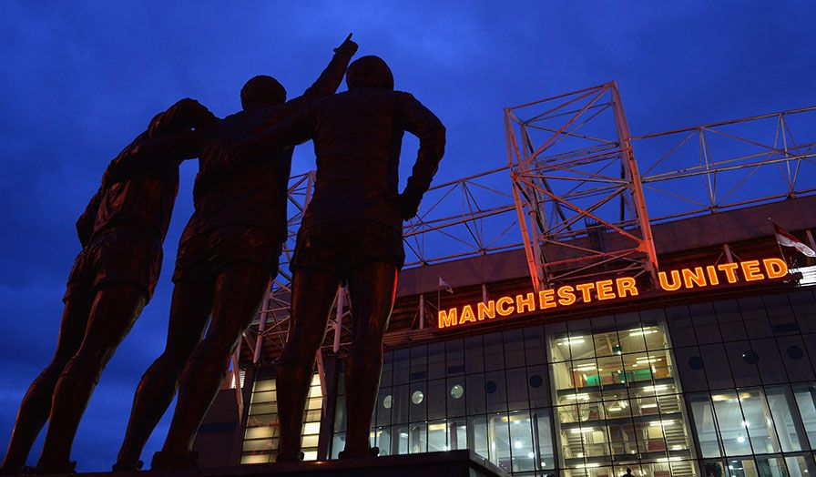

Historia de Old Trafford
Old Trafford, conocido como el "Teatro de los Sueños", ha sido el hogar del Manchester United desde 1910. Sobrevivió a los bombardeos de la Segunda Guerra Mundial y ha sido testigo de innumerables momentos históricos del fútbol. Hoy en día, es uno de los estadios más icónicos del mundo, con una capacidad de 74,310 espectadores.
